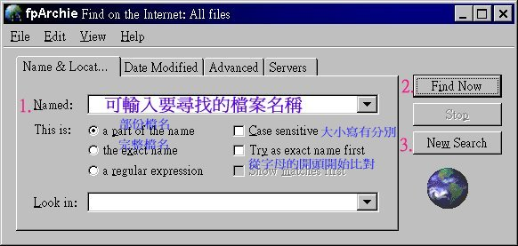

基 本 操 作
將 要 尋 找 的 檔 案 輸 入 於 Named 欄 位 後 , 按「Find Now」按 鈕 即 可 進 行 搜 尋。 結 果 會 顯 示 在 視 窗 下 方 的 列 表 盒。
如 果 你 已 經 找 到 你 想 尋 找 的 檔 案 , 可 按「Stop」按 鈕 , 停 止 搜 尋。
若 想 重 新 搜 尋 別 的 檔 案 時 , 請 按 New Search」按 鈕 , 重 新 搜 尋。
( 參 見 下 圖 )
